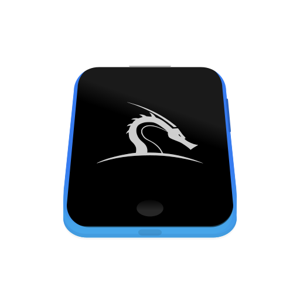

-
Mobile

-
Pendrive bootavel

-
Arm
O sistemas dos hackers O Kali Linux é uma poderosa distribuição focada em ferramentas de invasão, mas confira algumas coisas que você deve saber antes de usar o Kali Linux.
Se você já pesquisou sobre hackers ou testes de invasão, pode ter encontrado a seguinte palavra – Kali Linux. O Kali Linux é uma das ferramentas mais
usadas no inventário de um hacker.

Uma breve história do Kali LinuxA história do Kali Linux se inicia em 2006, quando uma distribuição Linux chamada BackTrack foi lançada. O BackTrack foi uma distro baseada em Ubuntu e possuía o mesmo intuito do Kali Linux, auxiliar profissionais de segurança da informação.
Em 2013, a Offensive Security, empresa que mantém o Kali Linux, anunciou o fim do suporte ao BackTrack, apresentando o Kali Linux que, diferente do BackTrack, tem como base o Debian. E assim nasceu a distribuição mais popular da área de segurança da informação.
Principais ferramentas do Kali LinuxA distribuição possui um arsenal com mais de 300 ferramentas nativas exclusivas para atividades de segurança e pentests. O Kali Linux inclui por padrão ferramentas como:
Metasploit
Desenvolvido pela empresa Rapid7, o Metasploit Framework é muito mais do que apenas uma coleção de exploits, também é uma base sólida que você pode construir e personalizar facilmente para atender às suas necessidades.
O Metasploit Framework é uma das ferramentas de auditoria de segurança mais úteis disponíveis gratuitamente para profissionais da área atualmente. De uma ampla gama de exploits de nível comercial e um amplo ambiente de desenvolvimento de exploração, até ferramentas de coleta de informações de rede e plugins de vulnerabilidade da Web.
GNOME ShelCada parte do GNOME Shell foi projetada para torná-lo simples e fácil de usar. A visão geral das atividades é uma maneira fácil de acessar todas as suas tarefas básicas.
Basta pressionar um botão para visualizar suas janelas abertas, iniciar aplicativos ou verificar se você tem novas mensagens. Ter tudo em um só lugar é conveniente e significa que você não precisa aprender seu caminho através de um labirinto de tecnologias diferentes.
Requisitos de instalação do Kali Linux
- Um mínimo de 20 GB de espaço em disco para a instalação do Kali Linux.
RAM para arquiteturas i386 e amd64, mínimo: 1 GB, recomendado: 2 GB ou mais.
- Suporte de inicialização de unidade de CD-DVD / USB